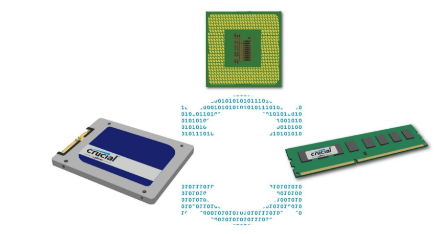

3.2.1 Entrada/Salida.
En informática, un periférico de entrada/salida o E/S (en inglés:
input/output o I/O) es aquel tipo de dispositivo periférico de un
computador capaz de interactuar con los elementos externos a ese
sistema de forma bidireccional, es decir, que permite tanto que sea
ingresada información desde un sistema externo, como emitir
información a partir de ese sistema. Los Dispositivos Periféricos de
entrada son todos aquellos dispositivos que permiten introducir
datos o información en una computadora para que esta los procese u
ordene.
Funciones.
Un periférico de E/S es el que se utiliza para ingresar (E) datos a la
computadora, y luego de ser procesados por la unidad central de
procesamiento (CPU), genera la salida (S) de información. Su
función es leer o grabar, permanente o virtualmente, todo aquello
que se haga con la computadora, para que pueda ser utilizado por los
usuarios u otros sistemas.
Tipos.
Dispositivos o periféricos de comunicación entre computadoras,
tales como módems y tarjetas de red, por lo general sirven para
entrada y salida. También, los dispositivos de almacenamiento de
datos, como los discos rígidos, la unidad de estado sólido, las
memorias flash, las disqueteras, entre otros, se pueden considerar
periféricos de entrada/salida.
Ejemplos:
* Multitáctil.
* Casco virtual.
* Impresora multifunción.
Almacenamiento de datos.
En ocasiones, se consideran periféricos de E/S a los dispositivos de
almacenamiento de datos, por ejemplo, las lectograbadoras de discos
ópticos, ‘lectoras’ de tarjetas de memoria, discos duros portátiles o
externos, memorias USB o memorias flash, etcétera.
Dispositivos de redes.
También, los dispositivos de redes o de comunicación, suelen
considerarse periféricos de E/S porque su función es la interacción o
interconexión entre dos o más computadoras, o entre la computadora
y otro periférico externo. Ejemplos: módem, tarjeta de red,
concentrador, conmutador (dispositivo de red), enrutador,
comunicación inalámbrica, bluetooth.
3.2.2 Almacenamiento.
Conforme la tecnología avanza, más datos se van generando, por lo
que es necesario contar con un almacenamiento eficiente para poder
guardar toda esa información y acceder a ellos. El almacenamiento
de datos ha cambiado mucho, desde los sistemas de disco, que muy
probablemente se sigan utilizando, pero de una forma más digital:
hoy se encuentran conectados a una red y son definidos por un
software.
El almacenamiento de datos tiene un proceso a través del uso de la
tecnología, ésta se aplica para organizar, distribuir y archivar
información con los bytes y los bits que son parte de los sistemas de
los que la gente depende día con día, llega a ser tan importante en
todos los servicios: desde una simple aplicación, contenido
multimedia, direcciones, contactos, hasta protocolos de red y todo lo
que tiene que ver con el mundo digital.
Memoria contra almacenamiento.
Generalmente, los usuarios de computadoras tienden a confundir los
términos “memoria” y “almacenamiento” pues los emplean de
manera indistinta, utilizándolos para referirse a la RAM (o memoria
principal) o al disco duro. Desde el punto de vista técnico, ambos
términos son prácticamente iguales pues tanto la RAM como el
disco duro se utilizan para almacenar información, claro está, de
formas distintas y para propósitos diferentes.
Mientras la memoria se refiere a la ubicación de los datos a corto
plazo, el almacenamiento es el componente de su computadora que
le permite almacenar y acceder a datos a largo plazo. Usualmente, el
almacenamiento se da en forma de una unidad de estado sólido o un
disco duro. El almacenamiento le permite acceder y almacenar sus
aplicaciones, sistema operativo y archivos por un tiempo indefinido.
Una diferencia importante entre memoria y almacenamiento es que
la primera se borra cuando se apaga la computadora. Por otro lado,
el almacenamiento permanece intacto no importa cuántas veces se
apague la computadora.
Por lo tanto, en la analogía del escritorio y el archivador, cualquier
archivo que quede en su escritorio cuando salga de la oficina se
botará. Todo lo que esté en su archivador se mantendrá igual.

La computadora distribuye los datos a distintos dispositivos de almacenamiento dependiendo el tipo de datos.
Almacenamiento en sistemas informáticos.
Un dispositivo de almacenamiento es un hardware que se utiliza
principalmente para almacenar datos. Cada computadora de
escritorio, computadora portátil, tablet y smartphone tendrán algún
tipo de dispositivo de almacenamiento en su interior y también
puedes obtener unidades de almacenamiento externo independientes
que se pueden utilizar en varios dispositivos.
* Unidades de discos duros (HDD).
* Discos de estado sólido (SSD).
Dispositivos de almacenamiento externo.
Además de los medios de almacenamiento contenidos en una
computadora, también hay dispositivos de almacenamiento digital
que son externos a las computadoras. Se utilizan comúnmente para
ampliar la capacidad de almacenamiento cuando una computadora
se queda sin espacio, para permitir una mayor portabilidad y para
facilitar la transferencia de archivos de un dispositivo a otro.
* Unidades de discos duros y discos de estado sólido externos.
* Dispositivos de memoria flash (unidades USB y tarjetas SD).
* Dispositivos de almacenamiento óptico (CD, DVD y discos
Blu-Ray).
* Disquetes.
Almacenamiento en la nube.
Aunque no es exactamente un dispositivo en sí mismo, el
almacenamiento en la nube es el tipo de almacenamiento más nuevo
y versátil para las computadoras. “La nube” no es un lugar u objeto,
sino un enorme conjunto de servidores alojados en centros de datos
de todo el mundo. Cuando guardas un documento en la nube, lo
estás almacenando en estos servidores.
Debido a que todo se almacena en línea, el almacenamiento en la
nube no utiliza ningún almacenamiento secundario de la
computadora, lo que te permite ahorrar espacio.
3.2.3 Fuentes de Alimentación.
Una fuente de alimentación es un componente esencial de cualquier
dispositivo electrónico ya que es ella quien se encarga de darle vida.
En cualquier equipo, por pequeño que sea, siempre hay una fuente
de alimentación, aunque no la veamos.
En los ordenadores de sobremesa, la fuente de alimentación se
encuentra generalmente en la parte inferior de la torre (en cajas
antiguas se encuentra en la superior), y muchas cajas de ordenador
optan por incorporar un compartimento para separarla del resto y ya
de paso ocultar todos los cables salientes de ella.
existen fuentes de alimentación modulares y semi-modulares, de
manera que los cables son total o completamente desmontables. De
esta manera, una fuente de alimentación modular mejora el flujo de
aire del PC ya que solo cuenta con los cables que se necesitan.
Una fuente de alimentación sirve para dar energía a un dispositivo
electrónico. Siguiendo con el tema de los ordenadores de sobremesa,
la fuente de alimentación da energía a la placa base, CPU, tarjetas
gráficas, HDDs, SSDs, ventiladores, lectores de CDs. En resumen,
alimenta a todo lo que necesite energía, para ello hace uso de
diferentes tipos de cables.
Un cable de 24 pines ATX es el que va a la placa base, para la CPU
podemos encontrar cables de hasta 8+8 pines (se conocen como
conectores de 12 V EPS) y para las tarjetas gráficas se utilizan
conectores PCIe en configuraciones de hasta 8+8+8+8 para las
gráficas más potentes, aunque habitualmente se usan 2 o 3 de ellos
únicamente. Con las NVIDIA RTX 30 Founders Edition, el
fabricante ha habilitado un nuevo conector molex de 12 pines, pero
traen el correspondiente adaptador así que no hay problemas de
incompatibilidad.
Las fuentes de alimentación proporcionan energía a los SSD y HDD
mediante conectores SATA de energía, y a los ventiladores mediante
conectores molex de 3 o 4 pines o bien mediante la propia placa
base (que es alimentada con el conector de 24 pines ATX). De esta
manera, todos los componentes reciben energía de la fuente de
alimentación. Además, las fuentes protegen a todos los componentes
mediante una gran cantidad de sistemas dedicados a ello.
Existen fuentes de alimentación que no requieren de ventilación, por
lo que su refrigeración es completamente pasiva. Estos modelos
suelen ser fuentes de medio-bajo voltaje con una alta eficiencia, para
que el calor generado sea menor y se pueda llevar a cabo su
disipación sin usar ni un solo ventilador acoplado a la fuente, con los
que existan en la caja serán más que suficiente.